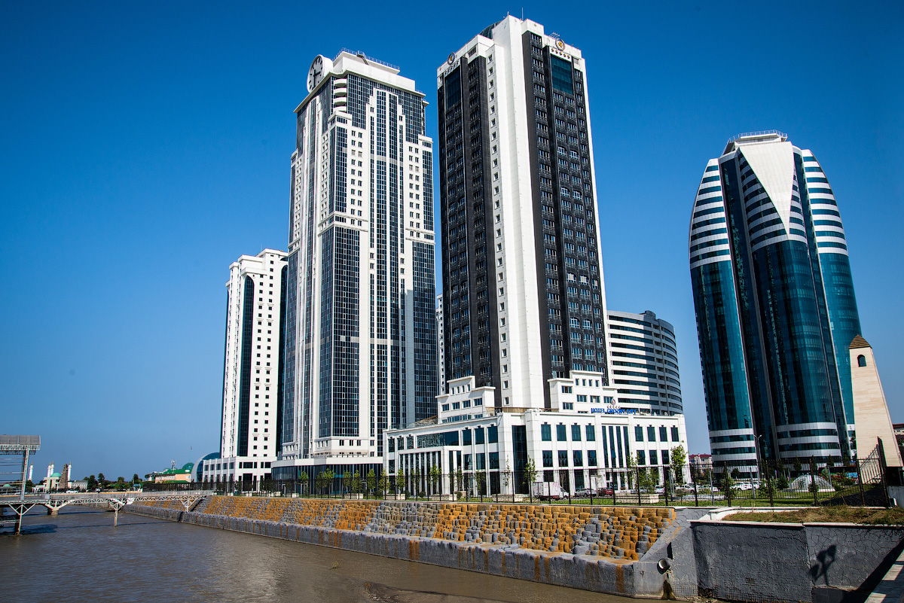
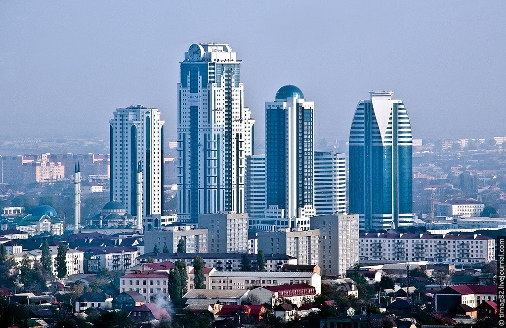
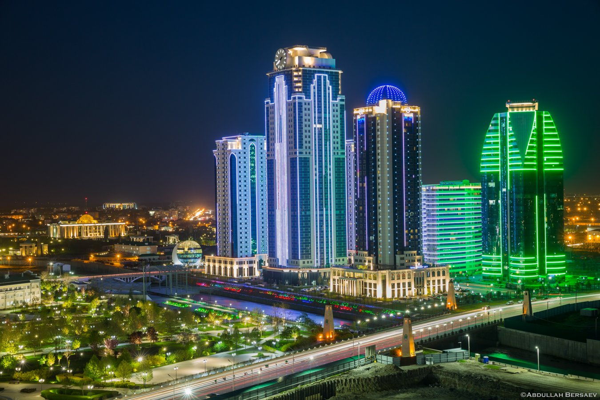

Грозный-Сити
Суперсовременный квартал небоскребов в центре Грозного, состоящий из жилых домов, гостиницы и
бизнес-центра. Площадь – 4,5 га. Был спроектирован модным архитектором Джалалом Кадиевым. Строился с
2005 по 2011 гг. Самое высокое здание комплекса носит название «Феникс» и насчитывает 40 этажей. В
ближайшее время планируется возведение второй очереди Сити. Главной изюминкой обещает стать
уникальная башня высотой в 79 этажей.